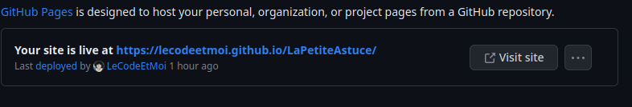

Astuce n°2

Pour pouvoir hebergé votre site web sur Github , nous passons par Github page .
Github Page permet d'hebergé que des sites static et non dynamique . Avant de réaliser le tutoriels , il faut que sur votre dépot il y est vos fichier dont un 1 fichier index.html . Si vous savez pas comment on fait je vous laisse sur l'Astuce n°1
Github Page permet d'hebergé que des sites static et non dynamique . Avant de réaliser le tutoriels , il faut que sur votre dépot il y est vos fichier dont un 1 fichier index.html . Si vous savez pas comment on fait je vous laisse sur l'Astuce n°1
Étape 1 Allez sur Github
Connectez-vous sur Github .Allez sur votre dépot > Settings > Pages
Il vous suffit de selectionner main et /root . (C'est souvent la confi de base) Puis en cliqué sur save . Vous devez avoir un lien au debut de votre page 